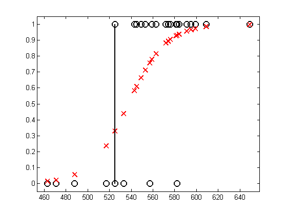

stat = load('satData.txt');
y = stat(:,1);
N = length(y);
X = stat(:,4);
perm = sortidx(X, 'ascend');
X = X(perm);
y = y(perm);
model = logregFitL2(X, y, 0);
[yhat, prob] = logregPredict(model, X);
figure;
plot(X, y, 'ko', 'linewidth', 2);
hold on
plot(X, prob, 'rx', 'linewidth', 2)
axis_pct
h = line([525 525], [0 1]);
set(h, 'color', 'k', 'linewidth', 2);
printPmtkFigure('logregSATdemo')
Warning: Log of zero. This warning will be
removed in a future release.
Consider using DBSTOP IF NANINF when
debugging.
Warning: Log of zero. This warning will be
removed in a future release.
Consider using DBSTOP IF NANINF when
debugging.
Warning: Log of zero. This warning will be
removed in a future release.
Consider using DBSTOP IF NANINF when
debugging.
Warning: Log of zero. This warning will be
removed in a future release.
Consider using DBSTOP IF NANINF when
debugging.
Warning: Log of zero. This warning will be
removed in a future release.
Consider using DBSTOP IF NANINF when
debugging.
